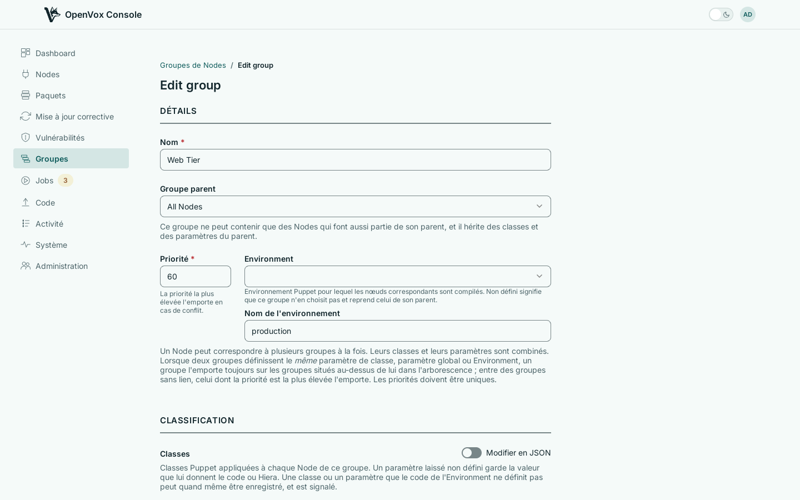

Utiliser
Classifier les Nodes
Décidez des classes, des paramètres et de l'Environment que reçoit chaque Node, avec une arborescence de groupes de Nodes sélectionnés par Facts ou épinglés par nom.
openvoxserver demande à la console ce que doit être chaque Node : quelles classes il inclut, avec quels paramètres, et de quel Environment provient son code. La console répond à partir de ses groupes de Nodes. La classification ne parvient à openvoxserver qu'une fois celui-ci connecté, ce que couvrent les deux guides d'installation.
Consulter les groupes nécessite classifier:read ; les créer, les modifier et les supprimer nécessite classifier:write.
Les groupes forment une arborescence
Chaque groupe a un parent. Au sommet se trouve All Nodes, un groupe intégré auquel appartient chaque Node. Vous ne pouvez ni le supprimer, ni le renommer, ni le déplacer, et il n'a ni règle ni Node épinglé, mais vous pouvez lui donner des classes, des paramètres et un Environment, qui s'appliquent alors à tout le parc.
Un groupe ne peut contenir que des Nodes qui font aussi partie de son parent. Un groupe placé sous Linux Servers ne récupère donc jamais un Node Windows, quoi que dise sa propre règle, et les Nodes d'un groupe sont toujours un sous-ensemble de ceux de son parent. Un nouveau groupe se place directement sous All Nodes, sauf si vous choisissez un autre parent.
Un groupe ne peut pas être déplacé sous lui-même ni sous l'un des groupes situés en dessous de lui, et un groupe qui a encore des groupes en dessous ne peut pas être supprimé : déplacez ou supprimez d'abord ceux-ci.
Un groupe sur lequel un rôle est accordé ne peut pas non plus être supprimé, car cela retirerait sans bruit l'accès que donne le rôle. Retirez d'abord le groupe du rôle, sur la page Rôles - voir Utilisateurs, rôles et jetons.
Comment un groupe décide à quels Nodes il s'applique
Un groupe s'applique à un Node lorsque le Node fait partie du parent du groupe et que :
- le Node y est épinglé par son nom, ou
- les Facts du Node satisfont la règle de correspondance du groupe : toutes ses conditions, ou l'une d'entre elles, selon le réglage du groupe.
Un groupe sans condition ni Node épinglé ne s'applique à aucun Node. Une règle vide ne signifie volontairement pas « tout le monde », afin qu'un groupe à moitié configuré ne puisse pas s'emparer du parc.
Un épinglage prime sur la règle du groupe lui-même, pas sur son parent. Un Node épinglé à un groupe dont le parent ne le contient pas ne fait pas partie du groupe, et la page du groupe liste ces épinglages pour qu'un épinglage sans effet ne passe pas inaperçu.
Chaque condition compare un Fact à une valeur :
| Opérateur | Correspond lorsque le Fact |
|---|---|
= |
est égal à la valeur |
!= |
diffère de la valeur |
~ |
correspond à la valeur en tant qu'expression régulière |
> < >= <= |
compare de cette façon, numériquement lorsque les deux côtés sont des nombres |
Les Facts sont désignés par leur chemin, avec des points pour les Facts structurés : os.family, os.release.major, networking.domain.
Créer un groupe
- Ouvrez Groupes et créez un groupe.
- Nommez-le, choisissez son groupe parent, et choisissez son Environment s'il doit en définir un. L'Environment se choisit dans une liste déroulante. Non défini (qui indique ce que le groupe hérite alors de son parent) laisse le choix au parent. Les Environments que signale openvoxserver sont listés en dessous. Autre... ouvre un champ de texte pour un nom qui n'est pas encore listé, comme une branche que vous venez de pousser, ou lorsque la liste n'a pas pu être chargée.
- Ajoutez des classes, chacune avec les paramètres dont elle a besoin, et d'éventuels paramètres de portée globale. Voir Choisir les classes ci-dessous.
- Construisez sa règle de correspondance, une condition par ligne : un chemin de Fact, un opérateur et une valeur. Choisissez si un Node doit satisfaire toutes les conditions ou l'une des conditions. L'éditeur refuse d'enregistrer une condition sans chemin de Fact, ou une expression régulière qui ne compile pas, et indique quelle ligne est en cause.
- Épinglez par certname les Nodes qui doivent appartenir au groupe quels que soient leurs Facts.
- Attribuez-lui une priorité, puis enregistrez.


La liste des groupes affiche l'arborescence, chaque groupe sous son parent, avec le nombre de Nodes que chacun sélectionne à cet instant : une règle qui ne sélectionne rien, ou tout, se voit donc immédiatement.
Modifier en JSON affiche la règle en JSON brut, pour y coller une règle ou écrire une forme que l'éditeur par lignes ne propose pas. Ses vérifications sont celles de l'éditeur par lignes : une règle enregistrée en JSON, ou via l'API, avec un chemin de Fact vide ou une expression régulière invalide est acceptée, et ne sélectionne simplement jamais rien.
Choisir les classes
La console lit depuis openvoxserver les classes que définit votre code déployé : les classes d'un groupe sont donc choisies, et non tapées.
- Sous Classes, commencez à taper dans Ajouter une classe, choisissez la classe et ajoutez-la.
- Pour définir l'un de ses paramètres, choisissez-le sous Définir un paramètre. Le champ qui apparaît correspond au type du paramètre : un choix pour un Boolean ou un Enum, un nombre pour un Integer ou un Float, du texte pour une String. Sa note indique le type et la valeur par défaut issue du code. Tout autre type se saisit en JSON ; le texte doit donc être entre guillemets doubles :
"value",["a", "b"]. - Omettez un paramètre pour conserver la valeur que lui donne le code ou Hiera. Retirez un paramètre pour revenir à cette valeur.
Les classes proviennent de l'Environment du groupe : le sien, ou à défaut celui du parent le plus proche qui en définit un, ou à défaut production. La page indique lequel, et quand la liste a été lue. Un Node également sélectionné par un autre groupe qui définit un Environment différent compile sur ce dernier, ce que le groupe ne peut pas savoir.
La liste est réutilisée pendant cinq minutes et relue après un déploiement de code. Actualiser les classes la relit immédiatement, et nécessite classifier:write.
openvoxserver conserve son propre cache de chaque Environment. S'il est réglé pour conserver les Environments indéfiniment, comme dans l'image de conteneur, une classe ajoutée par du nouveau code n'apparaît qu'une fois ce cache vidé - le même vidage dont un catalogue a besoin pour voir le nouveau code. Voir Installer avec des conteneurs.
Modifier en JSON affiche les classes en JSON brut, pour pouvoir les coller.
Classes qui ne correspondent pas au code
Un groupe peut nommer une classe que l'Environment ne définit pas, définir un paramètre que la classe ne déclare pas, ou donner une valeur qui ne correspond pas au type du paramètre. Cela arrive quand une classe est renommée ou supprimée dans le code, ou quand le groupe est enregistré avant le déploiement du code.
La page du groupe signale chacun de ces cas, et la liste des groupes affiche Classe non conforme sur le groupe. Ce ne sont que des conseils :
- Le groupe s'enregistre tel quel. Rien n'est retiré ni modifié.
- Les Nodes restent classifiés avec la classe. Un Node dont le catalogue nécessite une classe inexistante échoue à la compilation, avec
Could not find class, jusqu'à ce que le code ou le groupe soit modifié. - Seuls les types que la console sait vérifier sont vérifiés. Une valeur de tout autre type n'est jamais signalée.
Rien n'est marqué comme manquant lorsque l'un des manifestes de l'Environment ne peut pas être analysé, puisque la classe peut se trouver dans ce manifeste. La page liste à la place les manifestes et leurs erreurs.
Quand la liste n'est pas disponible
La page en indique la raison, et les classes et paramètres se saisissent par leur nom. Rien n'est signalé, et l'enregistrement comme la classification fonctionnent normalement. Les causes possibles :
- La console n'a pas de connexion à openvoxserver. Définissez
CONSOLE_PUPPET_SERVER_URL. - openvoxserver n'autorise pas la console à lire les classes. Ajoutez la règle indiquée dans le guide d'installation : conteneurs ou paquets.
- openvoxserver est injoignable. Si la liste a déjà été lue auparavant, cette liste antérieure est proposée, signalée comme possiblement périmée.
Quand des groupes se chevauchent
Un Node sélectionné par plusieurs groupes reçoit tout de chacun d'eux : chaque classe, chaque paramètre. Comme un Node membre d'un groupe fait aussi partie de chaque groupe situé au-dessus, un groupe hérite de tout ce que ces groupes définissent et que lui ne définit pas.
Lorsque deux groupes définissent différemment la même chose - le même paramètre de classe, le même paramètre de portée globale ou l'Environment -, deux règles décident, dans cet ordre :
- Un groupe l'emporte toujours sur les groupes situés au-dessus de lui. La valeur d'un enfant l'emporte sur celle de son parent, de son grand-parent, et ainsi de suite, quelles que soient leurs priorités.
- Entre des groupes dont aucun n'est au-dessus de l'autre, la priorité la plus élevée l'emporte.
Un groupe compte aussi comme se classant au moins aussi haut que son parent. Prenez un parent de priorité 10, son enfant de priorité 1 et un groupe sans lien de priorité 5, qui sélectionnent tous un même Node. L'enfant l'emporte sur son parent selon la première règle, et il l'emporte aussi sur le groupe sans lien, car il se classe à 10 : un raffinement d'un groupe l'emporte sur tout ce sur quoi ce groupe l'emporte.
Quand un enfant prend le pas sur une priorité plus élevée
Si un groupe définit quelque chose différemment d'un groupe situé au-dessus de lui et de priorité plus élevée, c'est toujours la valeur de l'enfant qui est utilisée, alors que les priorités seules auraient dit l'inverse. La console vous le signale : la page du groupe nomme le parent et les valeurs concernées lorsque vous l'ouvrez ou l'enregistrez, la liste des groupes marque le groupe Prend le pas sur la priorité, et le changement est noté sur la page Activité. C'est un avertissement, pas une erreur. Rien n'est refusé, et les Nodes sont classifiés normalement. Pour le faire disparaître, donnez à l'enfant la priorité la plus élevée ou retirez la valeur de l'un des deux groupes.
Les valeurs définies sur All Nodes ne déclenchent jamais cet avertissement : chaque groupe est censé les remplacer.
Définir des données de configuration
Les données de configuration sont des données que votre code lit avec lookup() : une valeur pour ntp::servers, profile::dns::resolvers ou toute autre clé Hiera. Les définir sur un groupe de Nodes les modifie pour chaque Node du groupe, sans commit ni déploiement de code.
- Ouvrez le groupe, et sous Classes, ouvrez Données de configuration (JSON).
- Saisissez un objet JSON de clés et de valeurs, par exemple
{"ntp::servers": ["0.pool.ntp.org"], "dns::timeout": 5}. Une valeur peut être n'importe quel JSON : une chaîne, un nombre, un booléen, une liste, un objet ounull. - Enregistrez le groupe. Les Nodes le prennent en compte à leur prochaine exécution Puppet.
Une clé compte jusqu'à 255 caractères parmi les lettres, les chiffres et _ : . -. Un groupe contient jusqu'à 1000 clés, chaque valeur pouvant atteindre 64 Kio. La clé lookup_options est refusée : c'est par elle que Hiera définit le comportement de fusion, ce que les données de configuration ne proposent pas.
Quelle valeur reçoit un Node
Les données sont combinées à partir de tous les groupes dont le Node fait partie, selon les deux mêmes règles que pour les paramètres de classe (voir Quand des groupes se chevauchent) : un groupe l'emporte sur les groupes situés au-dessus de lui, et entre groupes sans lien la priorité la plus élevée l'emporte. Une clé définie par le groupe gagnant remplace entièrement la même clé des autres : deux groupes qui définissent tous deux app::opts comme un objet ne voient pas leurs objets fusionnés clé par clé.
Les données de la console l'emportent sur le dépôt de contrôle
Lorsqu'une clé est définie à la fois ici et dans les données Hiera de votre dépôt de contrôle, c'est la valeur de la console qui est utilisée. Une clé que la console ne définit pas est trouvée dans le dépôt de contrôle comme auparavant. Les données de configuration sont donc le bon endroit pour une valeur que vous voulez remplacer par groupe, et le dépôt de contrôle reste l'endroit pour tout le reste.
Pas pour les secrets
Les données de configuration sont stockées en clair et visibles par toute personne pouvant voir les groupes de Nodes (classifier:read). N'y mettez ni mots de passe ni clés. La page Activité et le journal d'audit consignent les clés modifiées, jamais leurs valeurs.
Si l'exécution d'un Node échoue
openvoxserver demande à la console les données d'un Node à chaque compilation de catalogue. Si la console ne peut pas répondre, la compilation échoue avec une erreur qui nomme la console, au lieu de construire un catalogue à partir de valeurs manquantes. Les guides d'installation montrent comment configurer le serveur pour qu'il pose la question.
Vérifier ce qu'un Node reçoit
La page d'un groupe liste les Nodes qu'il sélectionne à cet instant. Ce qu'un Node reçoit finalement, c'est la fusion de tous les groupes qui le sélectionnent, et le seul endroit qui montre cette réponse complète est enc-bridge lui-même : interrogez-le sur l'hôte openvoxserver, comme le montrent les guides d'installation, et il affiche exactement ce qui est transmis à openvoxserver. Les données de configuration d'un Node sont à part : GET /api/v1/enc/<certname>/data, avec le même jeton, les renvoie.
La classification prend effet à la prochaine exécution Puppet du Node. Pour l'appliquer tout de suite, lancez une exécution depuis la page du groupe, ce qui exécute Puppet sur chaque Node que le groupe sélectionne ; voir Lancer des Jobs.
Chaque modification d'un groupe est consignée sur la page Activité, avec son auteur.
Mettre à jour depuis une version sans arborescence
La mise à jour ne modifie la classification d'aucun Node. Chaque groupe existant devient un enfant direct d'All Nodes, conserve sa règle, ses épinglages et sa priorité, et sélectionne selon toutes ses conditions comme auparavant.
Si vous aviez déjà un groupe nommé « All Nodes », il est renommé All Nodes (previous) et continue exactement comme avant, avec sa propre règle. Il n'est pas transformé en groupe intégré, car cela appliquerait ses classes à des Nodes que sa règle ne sélectionnait pas. Une fois que vous l'avez vérifié, vous pouvez déplacer ses classes vers le groupe intégré All Nodes et le supprimer.
Si vous faites tourner plusieurs instances de la console, terminez la mise à jour de toutes avant de placer un groupe sous un autre. Une instance encore sur l'ancienne version ignore les parents et classifierait selon la seule priorité. Voir Faire tourner plus d'instances.